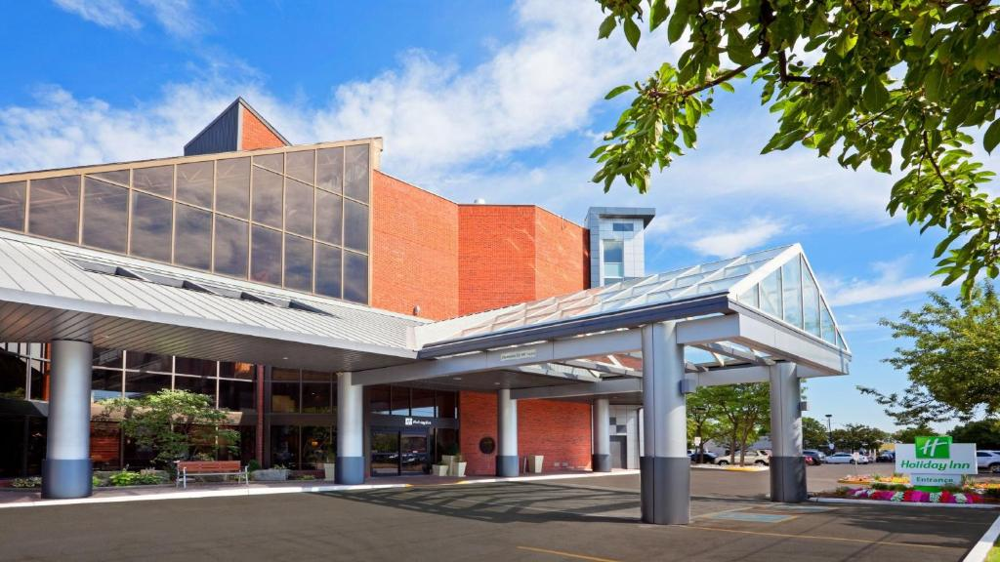

Places To Stay
These are the places to stay nearby us in Oakville. Our recommendation is the Holiday Inn Oakville (Centre) since this is where the limo bus will be picking everyone up for the celebration and its convenient spot next to the Oakville train station. We have also listed two other options; the Monte Carlo Inn is very close by to the Holiday Inn and is therefore a great spot as well; and of course Oakville is also home to many AirBnBs though it may be difficult to find one with a price that rivals either suggested hotel.
NOTE PRICES MAY FLUCTUATE & ALL IN CANADIAN DOLLARS (CAD)
Holiday Inn Oakville (Centre)

This is a versatile and welcoming hotel, perfect for guests seeking comfort and convenience. Located in the heart of Oakville, this hotel offers easy access to all of Oakville and beyond since it is a short walk from Oakville GO Station, providing seamless travel options to Toronto and other nearby attractions.
Each room is designed with modern amenities, ensuring a relaxing stay. Guests can enjoy free Wi-Fi, flat-screen TVs, and comfortable beds, ideal for unwinding after a night of celebration and day trips. The on-site restaurant, Courtyard Bistro, offers a variety of meals, including breakfast options that are perfect for gathering with family and friends before the big day.
The hotel also features an indoor pool and fitness center, allowing guests to relax and remain active during their stay.
On top of the convenience of being beside the GO Train station as mentioned above, the day of the celebration, this is where the limo bus going to the venue will pick everyone up and dop everyone off.
To look at the rooms click this link.
Prices
-
Double Standard: This hotel room sleeps 4 with 2 double beds. These rooms cost from $164 CAD per night.
-
King Standard Sofa Bed: This hotel room also sleeps 4 with 1 king size bed and 1 sofa bed. These rooms cost from $179 CAD per night.
-
King Premium: This hotel room sleeps 2 but is larger along with a couch. These rooms cost from $184 CAD per night.
-
King Suite Sofa Bed: This suite sleeps 4 with 1 king bed and 1 sofa bed. This room also includes additional living area. These rooms cost from $213 CAD per night.
Monte Carlo Inn Oakville
This hotel offers a charming and comfortable retreat for guests, combining modern amenities with a welcoming atmosphere. Conveniently located near the Oakville GO station (though not as close as the Holiday Inn), this hotel provides easy access for guests to all of Oakville and day trip transportation.
The hotel features elegant rooms equipped with everything needed for a restful stay, including plush bedding, free Wi-Fi, and flat-screen TVs. Some rooms even offer whirlpool tubs, perfect for unwinding after a lively wedding reception.
Guests can start their day with a complimentary breakfast, including a variety of hot and cold options, in the hotel’s cozy dining area. For those who prefer to stay in, the on-site restaurant, Pomodoro Ristorante, serves a selection of Italian-inspired dishes for lunch and dinner. It's a great spot for gathering with friends and family before or after the wedding.
The hotel also offers convenient amenities like a 24-hour fitness center and business facilities, ensuring a comfortable and hassle-free stay. The hotel’s friendly staff is dedicated to making each guest's experience special, so you can focus on enjoying the wedding celebration and creating lasting memories.
To look at the rooms click this link.
Prices
-
One Queen Bed: This room sleeps 2 with one queen bed. These rooms cost from $160 CAD per night.
-
Two Queen Beds: This room sleeps 4 with two queen size beds. These rooms cost from $170 CAD per night.
-
One King Bed: This room sleeps 2 with one king size bed. These rooms cost from $175 CAD per night.
-
Luxury King Studio Suite: This room sleeps 3 people with 1 king bed and 1 sofa bed. The room includes a slightly separated living area where the sofe bed resides. These rooms cost from $200 CAD per night.
-
Renaussance Suite with Sofa Bed: This room sleeps 3 with one queen bed and 1 sofa bed. These rooms cost from $167.50 CAD per night.
-
Queen Jacuzzi Suite: This room sleeps 2 people with 1 queen size bed. The room also features a jauzzi tub in the corner. These rooms cost from $180 CAD per night.
-
Deluxe King Jacuzzi Suite with Living Room: This room sleeps 4 people with 1 king bed and 1 sofa bed. The room also features a jacuzzi tub as well as a living space where the sofa bed resides. These rooms cost from $200 CAD per night.
-
Deluxe King Jacuzzi Suite: This room sleeps 2 people with 1 king bed. The room also includes a jacuzzi tub in the corner. These rooms cost from $200 CAD per night.
-
Deluxe King Jacuzzi Roman Suite: This room sleeps 2 people with 1 king bed. This room features a jacuzzi tub centered in the room complete with roman style columns at each corner. These rooms cost from $200 CAD per night.
AirBnB
Airbnbs in Oakville offer a unique and personalized lodging experience for guests looking for a home-like environment. These accommodations range from cozy apartments in the heart of downtown to spacious homes in quiet, residential neighborhoods, providing a variety of options to suit different group sizes and preferences.
Pros of Choosing an AirBnB:
-
Space and Privacy: Many Airbnbs offer more space than traditional hotel rooms, making them ideal for families or groups of friends traveling together. Guests can enjoy separate bedrooms, living areas, and even full kitchens, allowing for a more relaxed and homely stay.
-
Local Experience: Staying in an Airbnb can provide a more authentic experience of Oakville, with the opportunity to live like a local in charming neighborhoods. Some properties may also include outdoor spaces like gardens or patios, perfect for gathering with fellow guests.
-
Cost-Effective for Groups: For larger groups, Airbnbs can often be more economical than booking multiple hotel rooms, especially when considering the added amenities like kitchens and living spaces.
Cons to Consider:
-
Location and Transportation: Unlike hotels, which are often centrally located, some Airbnbs may be farther from key areas such as the Oakville GO Station and the Holiday Inn where the limo bus will pick guests up. This can make transportation more challenging and potentially more costly, especially if ride-sharing services or taxis are needed frequently.
-
Limited Services: Unlike hotels, Airbnbs typically do not offer daily housekeeping, on-site restaurants, or concierge services. Guests will need to manage these aspects themselves, which might be less convenient for those looking for a more traditional, service-oriented experience.
-
Variability in Quality: While many Airbnbs are well-maintained, the quality can vary widely depending on the host. It's important to read reviews and check ratings to ensure a comfortable and pleasant stay.
Overall, choosing an Airbnb in Oakville can provide a unique and cost-effective alternative to traditional hotels, particularly for those seeking more space and a local touch. However, it’s important to consider the potential trade-offs, especially in terms of location and the availability of services, to ensure a smooth and enjoyable experience for your wedding celebration.
To look at AirBnBs in the area click this link. You will want to be looking at Oakville Ontario around the area of Trafalgar and the Queen Elizabeth Way (QEW) for the placest closest to the GO Station.
Nearby Restaurants
Here you can find restaurants that are nearby both hotel options.
Open for Breakfast
-
McDonald's $
-
Tim Hortons $
-
Subway $
-
Sunset Grill (sit down restaurant) $$
-
OKO Bagels $
Nearby for Lunch and Dinner
-
Beertown Public House Oakville $$
-
The Burger's Priest $
-
Harper's Landing $$$
-
Wasabi & Teriyaki $$
-
Chef's Door Premium Shawarma $
-
Swiss Chalet $$
-
The Famous Owl of Minerva (Korean) $
-
Hibachi Teppanyaki & Bar $$$
-
McDonald's $
-
Monfort Mediterranean $$
-
Oakville Place Mall Food Court includes many options: link
Open Late
-
Beertown Public House Oakville (closes midnight) $$
-
Harpers Landing (closes 1am) $$$
-
McDonald's (open 24 hours) $
Please note as well that food delievery apps can be used in Canada (ex. Uber eats & Skip the Dishes).
Copyright ©2024, by Rachel Echevarria-Porter